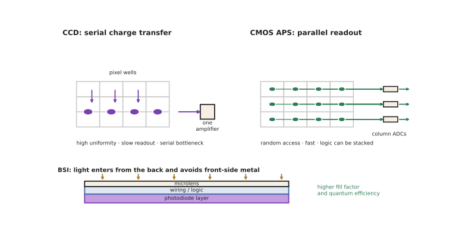

本页目录
探测 II · 图像传感器
层次：本科接触 + 业界巨大产业 ｜ 🔗 与微电子站的工艺与封装直接相关。 图像传感器是产量最大的光电器件——每年数十亿颗。它把上一页的单点探测扩展成阵列，其设计是噪声、速度、面积、成本、功耗多重约束下的精密权衡。本页讲清它的结构演进与关键指标。
学习层：像素变小，分辨率和暗光画质会一起变好吗？
1. 具体谜题：同一块硅面积，切得更细真的得到更多细节吗？
假设同一片 \(24\times24\,\mu\mathrm m^2\) 感光面积在一次曝光中收到 3600 个有效光子。它可以做成 \(4\) 个 \(12\,\mu\mathrm m\) 像素，也可以做成 \(64\) 个 \(3\,\mu\mathrm m\) 像素。先预测两种方案的每像素光子数和散粒受限 SNR；再把可见光 F/2.8 的 Airy 斑直径约 \(3.8\,\mu\mathrm m\) 放进比较：\(3\,\mu\mathrm m\) 像素继续增加会不会持续创造光学细节？
2. 先预测：架构、采样和 ISP 各自负责什么？
先写下四项预测：① CCD 只有一个输出放大器时，读出是并行还是串行；② 卷帘快门逐行曝光时，快速横向移动的直线会向哪一侧倾斜；③ 四个小像素合并后，若读出噪声独立，SNR 会提高约 2 倍还是保持不变；④ Bayer 的绿色像素占一半，是否意味着每个输出 RGB 像素都真的测到了三种颜色。实验先显示像素账本，再打开读出时序和重建代价。
3. 最小 mental model：每个像素是一只带容量的计数桶
曝光把光子转成电子，电子在满阱容量内积累，再经像素放大器、列 ADC 和 ISP 读出。像素面积决定收集光子与采样间距，满阱和读噪决定可用动态范围；阵列架构决定数据搬运、时序和功耗。增加采样点只有在光学传递函数仍含有相应空间频率时才有意义。
4. 正式机制：光子统计、动态范围与快门时序
对每像素平均信号 \(S=\eta N_\gamma\)、读出噪声 \(\sigma_r\)、暗电流电子数 \(D\)，可用
若同一总面积切成 \(k^2\) 倍像素数，理想均匀照明下单像素光子数降为 \(1/k^2\)，shot-noise SNR 降为 \(1/k\)；四像素合并可在信号相加后恢复光子预算，但实际还受读出位置、串扰和 ADC 方式影响。卷帘快门的第 \(r\) 行在不同时间 \(t_r\) 取样，运动造成空间位置与时间错位；全局快门用存储节点换同步。
5. 静态实验：像素、满阱和读出路径的账本
无 JavaScript 时的静态读法：下面的对照表采用单色通道、量子效率 \(\eta=1\)、暗电子为 0、读出噪声为 0 的理想基线；3600 是落在这个单色通道的总有效光子数，不是 Bayer RGB 原始总光子数：
| 方案 | 像素数 | 每像素光子 | shot-noise SNR | 读法 |
|---|---|---|---|---|
| \(12\,\mu\mathrm m\) | 4 | 900 | 30 | 大像素，暗光裕度高 |
| \(3\,\mu\mathrm m\) | 64 | 56.25 | 7.5 | 采样密，但单像素更吵 |
| 4 合 1 | 16 个输出 | 225（每输出） | 15 | 面积/读出方式仍需核对 |
若满阱 \(N_{FW}=30{,}000\) e\(^-\)、读噪 \(\sigma_r=3\) e\(^-\)，满阱到读噪的理想动态范围约为 \(10{,}000\)（80 dB）。F/2.8 的约 \(3.8\,\mu\mathrm m\) Airy 斑说明 \(3\,\mu\mathrm m\) 采样已接近光学瓶颈。脚本可切换像素尺寸、光子数、满阱、读噪、CCD/CMOS、卷帘/全局快门，显示 SNR、动态范围、阵列读出路径和一帧运动几何；先预测再解锁。
6. 反例与边界：像素数量不是单一质量指标
- 更多像素不自动提高真实分辨率。当镜头 MTF、衍射或噪声已成为瓶颈，新增像素只会过采样或放大后处理的负担。
- binning 不是无损魔法。模拟合并、数字合并和读出后求和的噪声传播不同；彩色 Bayer 合并还要面对滤光片与色彩采样。
- CMOS/CCD 的优劣依工作负载而变。CCD 的单放大器一致性、CMOS 的并行度与集成逻辑分别对应不同系统约束；“胜出”不等于每个科学应用都替代。
- ISP 不能恢复没有进入传感器的频率。去噪、去马赛克、HDR 和 AI 放大都带有模型或先验；运动错位、饱和和坏点也需要独立的校正账本。
7. 迁移题：为相机任务选择像素与读出架构
给高速机器视觉、手机暗光和天文长曝光各写一份传感器规格：像素尺寸、满阱、读噪、量子效率、快门类型、ADC 并行度和是否需要背照/堆叠。若要用多帧合成提高 SNR，先算总光子预算，再说明对齐、运动和满阱饱和会在哪一步破坏理想的 \(\sqrt N\) 收益。

一、CCD 与 CMOS：一场已经分出胜负的竞争
CCD：电荷在势阱间逐级转移到唯一的输出放大器。
- 优点：填充因子高、噪声一致性极好（只有一个放大器）；
- 缺点：读出慢（串行）、功耗高、需要特殊工艺、无法集成逻辑。
CMOS（APS，有源像素）：每个像素自带放大器，可随机寻址。
- 优点：读出快（可并行、可开窗）、功耗低、可与逻辑单片集成（片上 ADC、ISP、甚至 AI 加速器）、用标准 CMOS 工艺 → 成本大幅下降；
- 早期缺点：每像素有放大器 → 填充因子低、放大器失配造成固定图案噪声（FPN）。
CMOS 如何胜出（这是一条典型的技术演进路线）：
- 微透镜阵列补回填充因子；
- 相关双采样（CDS）消除复位噪声与部分 FPN；
- 背照式（BSI）：从背面入光，避开正面金属布线的遮挡 → 量子效率大幅提升；
- 堆叠式（stacked）：传感器层与逻辑层分开制造再键合（🔗 微电子站第十五页的混合键合），各自用最优工艺 → 高速读出 + 复杂片上处理。
结论：CMOS 已在绝大多数领域取代 CCD。CCD 仅在少数极高一致性要求的科学与天文场合保留。这是"可集成性最终战胜单项性能"的经典案例——与 🔗 微电子站反复出现的主题一致。
二、关键指标与权衡
| 指标 | 含义 | 主要权衡 |
|---|---|---|
| 像素尺寸 | 决定分辨率与感光面积 | 小像素 → 高分辨率但每像素光子少（SNR 差）、且趋近衍射极限 |
| 满阱容量 | 最大可存电子数 | 与像素面积正相关 → 决定动态范围 |
| 量子效率 | 光子→电子转换率 | BSI 显著提升 |
| 读出噪声 | 电子数 rms | 决定暗光性能；现代可低至 1 e⁻ 以下 |
| 动态范围 | 满阱/读噪 | HDR 技术可扩展 |
| 帧率 | — | 与读出架构、ADC 并行度相关 |
"像素越多越好"是一个需要澄清的误解（这是本页最实用的判断）：
- 传感器尺寸固定时，像素数翻倍 → 每像素面积减半 → 收集光子减半 → SNR 降约 \(\sqrt2\) 倍；
- 当像素尺寸小到接近艾里斑（第四页，可见光下 F/2.8 时约 3.8 μm 量级），再增加像素数不再带来真实分辨率——光学已经成为瓶颈；
- 所以手机厂商用"像素合并（binning）"：高像素模式用于强光，暗光下把 4 个或 9 个像素合并当一个大像素用，换取 SNR。这本质上是在承认"像素数与信噪比不可兼得"。
三、彩色与滤光
Bayer 阵列：RGGB 排列（绿色像素占一半，因人眼对绿最敏感），再由去马赛克（demosaicing）算法插值出全彩图像。
代价：
- 每个像素只测一种颜色 → 空间分辨率有损失，且可能产生摩尔纹与伪色；
- 滤光片吸收约 2/3 的光 → 感光度下降。
替代方案：
- 三片式分光棱镜（专业摄像机）：无损失但体积大、成本高；
- RYYB / RGBW：用黄色或白色像素换取进光量，代价是色彩还原变难；
- 量子点/有机滤光、堆叠式垂直分光（不同深度吸收不同波长）。
红外截止滤光片：硅对近红外敏感而人眼不敏感 → 必须滤除，否则色彩失真。而这正是为什么改装去掉该滤片的相机可以拍红外。
四、几种重要的传感器类型
- 全局快门 vs 卷帘快门：
- 卷帘（rolling）：逐行曝光读出，高速运动物体会变形（果冻效应）、闪光灯同步受限。但像素结构简单、成本低；
- 全局（global）：所有像素同时曝光，需每像素额外的存储节点 → 面积与噪声代价。工业检测、机器视觉必需；
- SPAD 阵列：单光子探测阵列，用于 dToF LiDAR（第十七页）与超低光成像；
- 事件相机（DVS）：每个像素独立地只在亮度变化时输出事件，无帧的概念。
- 优势：微秒级时间分辨、极高动态范围、低数据量与低功耗；
- 用于高速运动跟踪、机器人（🔗 自动化站）。它代表了一种与传统成像完全不同的范式——把"采样"从固定帧率变成事件驱动，与神经形态计算同源；
- 红外焦平面阵列：制冷型（InSb/HgCdTe，性能好、贵）与非制冷型（微测辐射热计，便宜、普及）。
五、ISP：图像信号处理
原始数据（RAW）远不是照片。ISP 流水线通常包括：
黑电平校正 → 坏点修正 → 去噪 → 去马赛克 → 白平衡 → 色彩校正矩阵 → 伽马 → 锐化 → 色调映射 → 压缩
关键认识：现代手机照片的画质，很大程度上由算法而非光学决定。
- 多帧合成（HDR、夜景）：连续拍多张对齐叠加 → 本质上是增加总光子数（承第九页：提高 SNR 的根本办法就是收集更多光子）；
- 算法能做的与不能做的：能降噪、能扩展动态范围、能校正畸变与色差（第二页）；但不能创造根本没有进入系统的高频信息（第四页）。"AI 放大补细节"是在按先验猜测，而非恢复——判读这类宣称时要清楚区别。
这也是"计算摄影"的分界线（第十一页展开）。
六、与微电子站的接续
图像传感器是光电与微电子结合最紧密的产品之一：
- 像素电路是模拟设计（🔗 微电子站第八页：噪声、失配、\(g_m/I_D\) 全部适用）；
- 列并行 ADC 是大规模数据转换器设计（第九页）；
- BSI 与堆叠依赖先进封装与混合键合（第十五页）；
- 片上 AI 加速器（第十七页）正在进入传感器，实现"近传感器计算"——减少数据搬运（存储墙的同一逻辑）。
七、要点
- CMOS 靠可集成性战胜 CCD，BSI 与堆叠是关键突破；
- 像素小到接近艾里斑后，增加像素数不再提升真实分辨率；binning 是承认 SNR 与像素数的权衡；
- Bayer 阵列以光量与分辨率换取彩色；
- 卷帘快门造成运动变形，全局快门以面积换取同步曝光；
- 事件相机是与帧成像完全不同的范式；
- 多帧合成的本质是增加光子数；算法不能创造未进入系统的信息。
下一页：如何客观评价一个成像系统的好坏？MTF 给出了答案，而计算成像则模糊了"光学"与"算法"的边界。